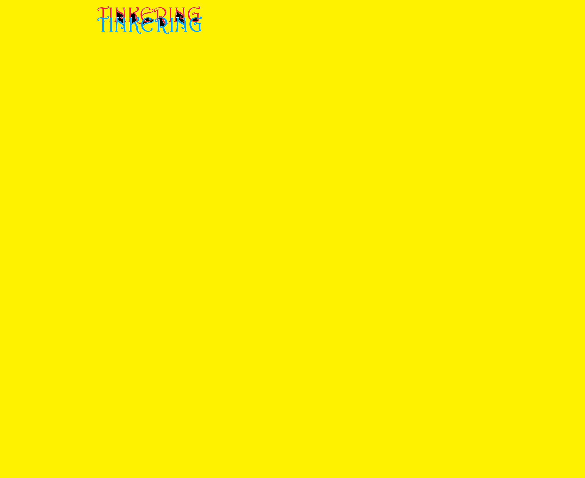

Hello People!!!
Tinkering...that is what I love to do.I am 12 years old.I go around breaking things whichever seems interesting to me to look how it is inside and how it works.I started doing this(breaking things)after I started going to Mango Education.Here I learnt stuff which I never knew.I also did experiments based on the topic I learnt.Here is the link of the Mango Education,This is a link.My hobbies are playing guitar,chess,and stargazing.
p{
font family: "Comic Sans MS";
}